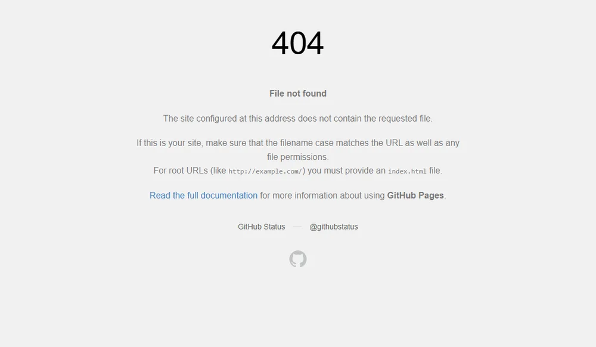
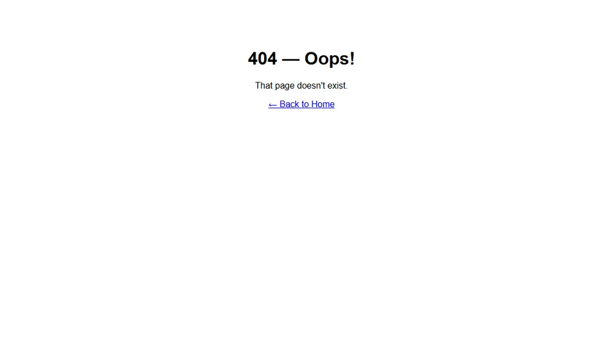

Personal portfolio
The Git homework: a portfolio repository on GitHub Pages with my name, photo, bio, skills and project links, built up over 26 commits with clear messages.
K0126002 · Week 10 · Git, GitHub and Pages
The homework and the practice exercises from class. I did them on November 8, 2026, after the class sessions, so the commit dates are from that day. Every repository, commit, pull request and live site below is real and linked, so you can check each one.
The Git homework: a portfolio repository on GitHub Pages with my name, photo, bio, skills and project links, built up over 26 commits with clear messages.
The Monday homework: a repo with an index.html that has my name and the date, pushed to GitHub and published with Pages. It also holds the Friday 404 exercises.
The Friday homework: my Book Search app (Open Library API) deployed to GitHub Pages, with index.html in the repo root and no absolute paths or debug logging.
The three exercises from the Monday study guide, done in order in one repository called git-exercise, plus a pull request. The commands and their output are copied from my terminal.
Goal: initialise a Git repository, create a file and make the first commit.
$ mkdir my-first-git && cd my-first-git
$ git init
Initialized empty Git repository in .../my-first-git/.git/
$ echo "<h1>Hello Git</h1>" > index.html
$ git status
On branch main
No commits yet
Untracked files:
(use "git add <file>..." to include in what will be committed)
index.html
nothing added to commit but untracked files present (use "git add" to track)
$ git add index.html
$ git commit -m "Initial commit: add index.html"
[main (root-commit) 5dc496a] Initial commit: add index.html
1 file changed, 1 insertion(+)
create mode 100644 index.html
$ git log --oneline
5dc496a Initial commit: add index.htmlResult: the file showed up as untracked, then committed as 5dc496a. See the commit.
Goal: make a feature branch, add a change, and merge it back into main.
$ git checkout -b feature-style
Switched to a new branch 'feature-style'
$ echo "body { font-family: sans-serif; }" > style.css
$ git add style.css && git commit -m "Add basic stylesheet"
[feature-style 12dd5e7] Add basic stylesheet
1 file changed, 1 insertion(+)
create mode 100644 style.css
$ git checkout main
Switched to branch 'main'
$ ls
index.html
$ git merge feature-style
Updating 5dc496a..12dd5e7
Fast-forward
style.css | 1 +
1 file changed, 1 insertion(+)
create mode 100644 style.css
$ ls
index.html
style.css
$ git log --oneline --graph --all
* 12dd5e7 Add basic stylesheet
* 5dc496a Initial commit: add index.htmlResult: on main the ls showed only index.html after switching back, and style.css appeared once I merged feature-style (a fast-forward merge).
Goal: create an empty repository on GitHub and push my local commits to it.
$ git remote add origin https://github.com/rahimjonkomiljonov/git-exercise.git
$ git remote -v
origin https://github.com/rahimjonkomiljonov/git-exercise.git (fetch)
origin https://github.com/rahimjonkomiljonov/git-exercise.git (push)
$ git push -u origin main
To https://github.com/rahimjonkomiljonov/git-exercise.git
* [new branch] main -> main
branch 'main' set up to track 'origin/main'.Result: both commits are on GitHub. Open the repository.
Goal: practise the GitHub collaboration workflow from the slides: branch, push, open a pull request and merge it.
$ git checkout -b add-readme
Switched to a new branch 'add-readme'
$ git add README.md && git commit -m "Add README describing the exercise"
[add-readme a764c74] Add README describing the exercise
1 file changed, 7 insertions(+)
create mode 100644 README.md
$ git push -u origin add-readme
remote:
remote: Create a pull request for 'add-readme' on GitHub by visiting:
remote: https://github.com/rahimjonkomiljonov/git-exercise/pull/new/add-readme
remote:
To https://github.com/rahimjonkomiljonov/git-exercise.git
* [new branch] add-readme -> add-readme
branch 'add-readme' set up to track 'origin/add-readme'.
$ gh pr create --base main --head add-readme --title "Add README" ...
https://github.com/rahimjonkomiljonov/git-exercise/pull/1
$ gh pr merge 1 --merge
$ git checkout main && git pull origin main
Switched to branch 'main'
Your branch is up to date with 'origin/main'.
From https://github.com/rahimjonkomiljonov/git-exercise
* branch main -> FETCH_HEAD
12dd5e7..f5cc4f1 main -> origin/main
Updating 12dd5e7..f5cc4f1
Fast-forward
README.md | 7 +++++++
1 file changed, 7 insertions(+)
create mode 100644 README.md
$ git log --oneline --graph --all
* f5cc4f1 Merge pull request #1 from rahimjonkomiljonov/add-readme
|\
| * a764c74 Add README describing the exercise
|/
* 12dd5e7 Add basic stylesheet
* 5dc496a Initial commit: add index.htmlResult: pull request #1 was opened and merged, which created the merge commit f5cc4f1. See pull request #1.
The three exercises from the Friday study guide, done in the webpro-w9 repository.
Goal: turn on Pages for my webpro-w9 repo and confirm the site is live.
$ git init
Initialized empty Git repository in .../webpro-w9/.git/
$ git add index.html && git commit -m "Add index.html with my name and date"
[main (root-commit) 05adba7] Add index.html with my name and date
1 file changed, 24 insertions(+)
create mode 100644 index.html
$ gh repo create webpro-w9 --public (no README)
https://github.com/rahimjonkomiljonov/webpro-w9
$ git remote add origin https://github.com/rahimjonkomiljonov/webpro-w9.git
$ git push -u origin main
To https://github.com/rahimjonkomiljonov/webpro-w9.git
* [new branch] main -> main
branch 'main' set up to track 'origin/main'.
$ Settings -> Pages -> Deploy from a branch -> main -> / (root) -> Save (done through the GitHub API)
Pages enabled: https://rahimjonkomiljonov.github.io/webpro-w9/ status=nullResult: the site is live at https://rahimjonkomiljonov.github.io/webpro-w9/.
Goal: see what a visitor gets when the URL does not exist on my site, and think about whether it is a good experience.

Question: is this a good user experience? What would I improve? No. The page says nothing about my site, it gives the visitor no way back to my pages, and it looks like an error from GitHub, not from me. I would explain that the page is missing in a friendly way and add a link back to the home page, in the same style as the rest of the site.
Result: I opened /webpro-w9/this-does-not-exist.html and got GitHub's generic "Page not found" page. There was no 404.html in my repo yet.
Goal: add my own 404.html and deploy it, so GitHub Pages serves it for missing pages.
$ ls (is there a 404.html yet?)
index.html
$ git add 404.html
$ git commit -m "Add custom 404 page"
[main a072010] Add custom 404 page
1 file changed, 13 insertions(+)
create mode 100644 404.html
$ git push
To https://github.com/rahimjonkomiljonov/webpro-w9.git
05adba7..a072010 main -> main
# 404.html
<!DOCTYPE html>
<html lang="en">
<head>
<meta charset="UTF-8">
<meta name="viewport" content="width=device-width, initial-scale=1.0">
<title>Page Not Found</title>
</head>
<body style="text-align:center;padding:60px;font-family:sans-serif">
<h1>404 — Oops!</h1>
<p>That page doesn't exist.</p>
<a href="./">← Back to Home</a>
</body>
</html>
Result: after the push (commit a072010) the same missing URL shows my own page. See the commit.
I used the same idea on this site, in its own design. Try a page that does not exist: